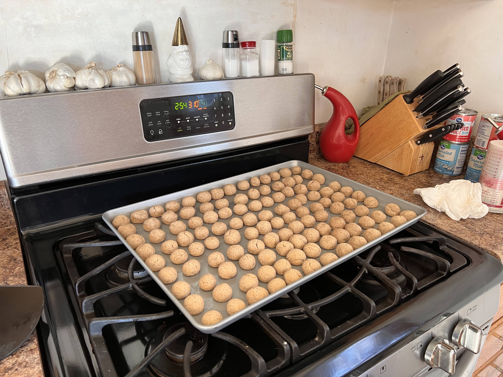
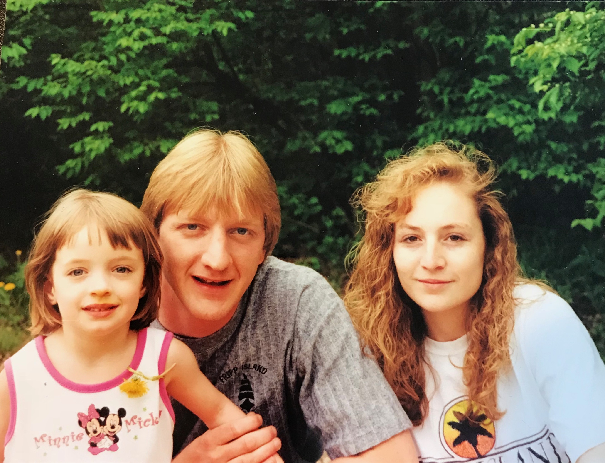

About Suzi's Bakeshop
Suzi's Bakeshop is a home bakery where all the baked goods are free! Suzi doesn't bake for the money, she bakes for the love of her friends, family, and colleagues. Her specialties include Peppernuts, Spritz Cookies, Angel Food Cake, and many more! You can find Suzi buying lots of flour and baking many many batches of cookies during the holiday season!
About Suzi
Suzi lives in Cincinnati, OH. She grew up just minutes from her current home with her mother Sally, father Pete Sr., and brother Pete Jr. She currently lives with her husband Dan, her dog Mocha, and her cat Bean. She wishes she still lived with her daughter, Kait, but she survives by baking goodies and Facetiming her!